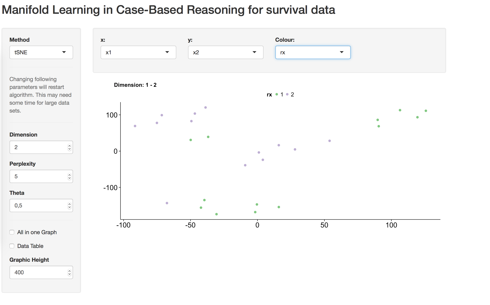

Beside of searching for similar cases and matching datasets, you may do a dimension reduction on the distance matrix. Actually, just t-SNE (t-distributed Stochastic Neighbor Embedding using Barnes-Hut Implementation (see Rtsne R package)) is activated. More are comming. For this task you may call a shiny app for interactive analysis. As input you need a cbrCoxModel or a cbrRFProxy object.
cbrDistViz(sc)This opens a shiny app and you may then search for clusters in the by t-SNE reduced data set.

Note: On big data sets, the t-SNE may need some time. Do not close the shiny window.